01 / ARGENTINA5 DAYS
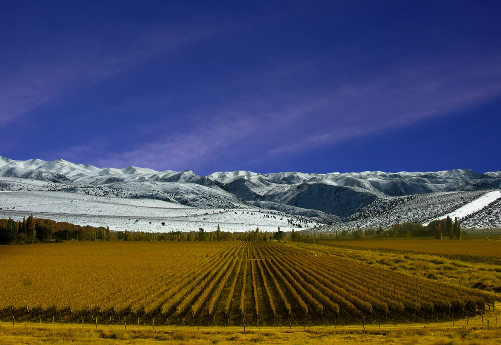
Arriving
Counting down to the journey.
{kind=link}
WINE COUNTRY & WRONG TURNS
Starting in Argentina.
Food, wine country and a first taste of the road. Valle de Uco and thermal springs are on our radar.
The opening chapterTWO CULTURES. TWO LANGUAGES. ONE ADVENTURE.
Real people. Wrong turns. Stories in English y español. We’re getting lost in Latin America—and you’re coming with us.
01 / THE ITINERARY
About a month on the road. From Mendoza to coastal Chile, then deeper into Bolivia. This is the starting plan. The people we meet will help write the rest.

Arriving
WINE COUNTRY & WRONG TURNS
Food, wine country and a first taste of the road. Valle de Uco and thermal springs are on our radar.
The opening chapter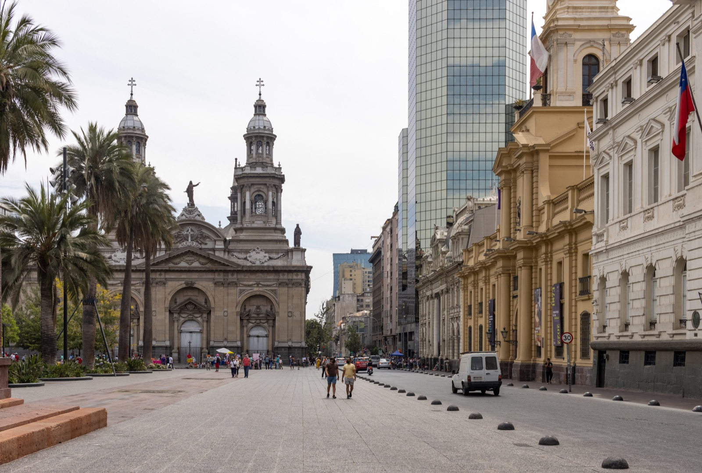
Arriving
CITY STREETS TO PACIFIC AIR
Santiago’s Plaza de Armas and Metropolitan Cathedral, the Maipo Valley and Viña del Mar. A new country, new conversations and a change of pace.
The next turn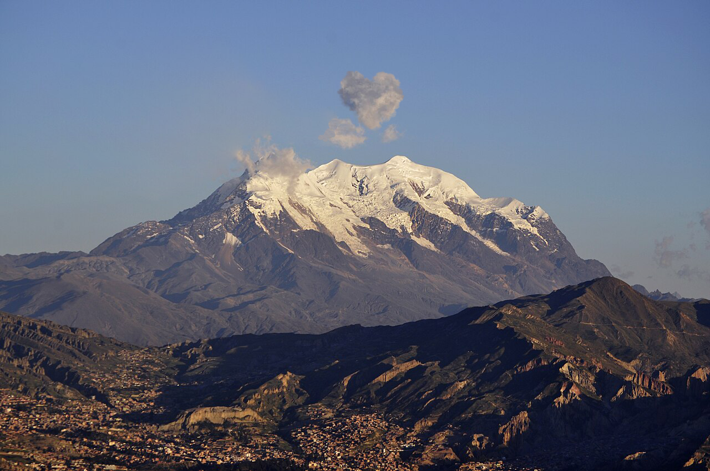
Arriving
STAY LONGER. GO DEEPER.
Time to settle in, meet people and follow local leads. Fewer boxes to tick. More stories to stumble into.
The deeper diveCountdowns run to midnight at each destination. The unexpected is still the point. Vamos a ver qué pasa.
02 / NICE TO MEET YOU · MUCHO GUSTO
We’re two travel companions, one Latino-American English speaker who learned Spanish later in life, and one Bolivian born native Spanish speaker who learned English later in life, experiencing Latin America together. Sometimes we see things differently. Sometimes we get lost along the way. Usually, that’s where the good story starts.
English and Spanish live side by side here: in conversations with locals, over food, on bus rides and in the moments we couldn’t have planned.
You don’t need to speak both languages.
You just need a little curiosity.
03 / FOLLOW US
04 / DISCOVER WITH US
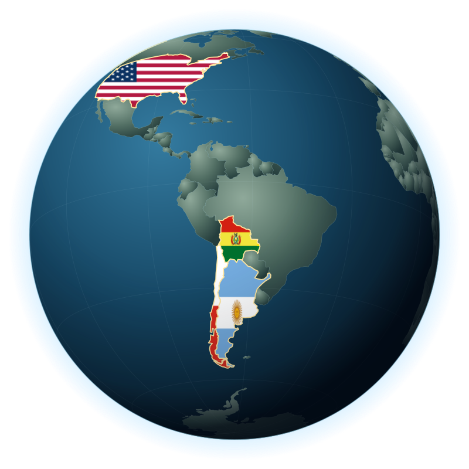
Select a country to zoom in and reveal its cities. Select a city for notes from that stop.
05 / JOIN THE FAMILY
We partner with stays, restaurants, local experiences and travel brands to create human, culturally curious content in English and Spanish.
Let’s talk hola@lostandperdido.com06 / LEARN WITH US
from no sabo, to yo hablo
We’re committed to learning, then sharing what we learn. We’re building an English and Spanish community where we can practice, teach, and grow together.
Lost on your own? Maybe. With someone to practice with, you’ll always find your way.
Our learning modules are a work in progress. We’re putting them together, one lesson at a time. Nos vemos pronto.
We’re not just showing you where we’re going.
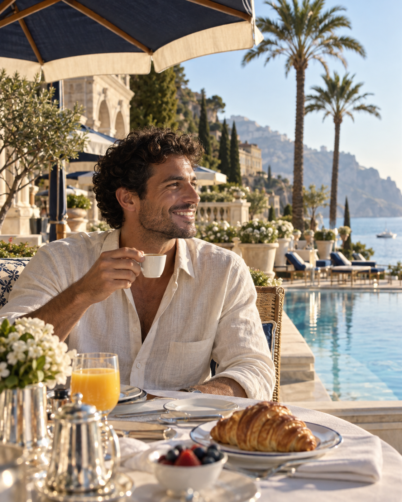
UGC CONCEPTritzcarlton Slow mornings. Unforgettable stays.
Illustrative brand contentLost & Perdido turn a stay, a taste, or an experience into content people can picture themselves in.
From the first idea to the final frame, we shape the content around your brand and our audience.
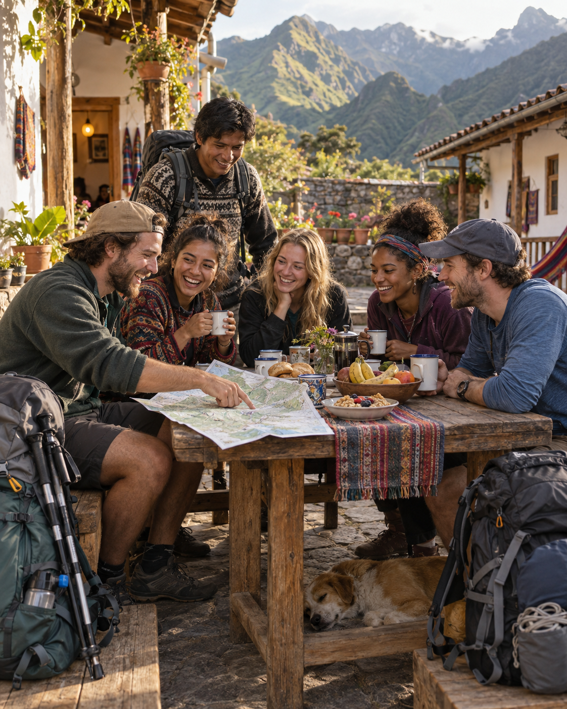
CHECK IN. CONNECT. HEAD OUT.HOSTEL COMMUNITY · CONCEPT
A great hostel is more than a bed. Lost & Perdido bring the community into focus: travelers meeting, sharing stories, and heading out on their next adventure together.
Group tours are in development. Partner opportunities, itineraries, and dates will be agreed as the program takes shape.
lostandperdido Practice together. Keep moving forward. @skool
Partnership conceptThe strongest collaborations begin with a clear fit. Lost & Perdido work with partners who share our ambition to make useful, memorable content.
Bring us your ambition. Contact hola@lostandperdido.com to start the conversation.
From a memorable meal to a first leap into adventure, Lost & Perdido bring your brand into experiences people want to be part of. Restaurants, outdoor adventures, water sports, wine tours, and beyond: every feature starts with a story worth sharing.
We choose partnerships and placements at our discretion to keep the work relevant to our community.
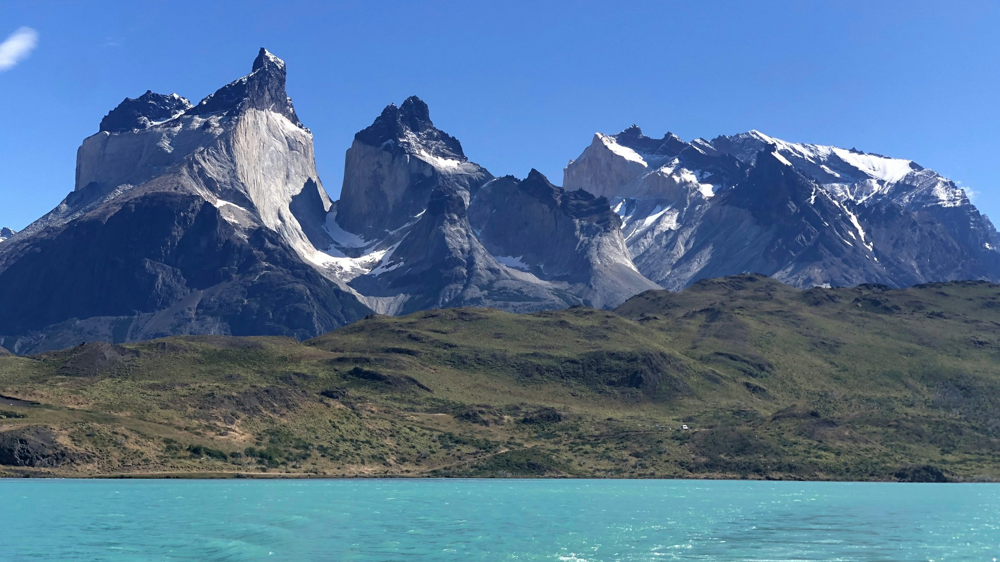
Lost & Perdido capture the views, dishes, and experiences that make your place distinctive. The result: a focused collection of 10 professional photos for your agreed marketing use.
We agree the shot list, delivery, and usage with you before the shoot, so the collection has a clear purpose from the start.
Bring your brand into Lost & Perdido’s world with a coordinated mix of long-form storytelling, social content, and photography.
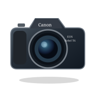
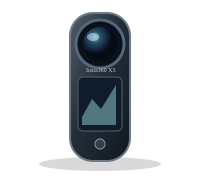
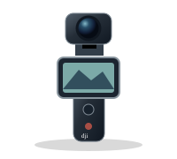
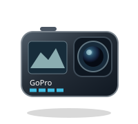
A focused introduction.
A broader brand story.
Room for the full story.
Customizable package concepts. We confirm platforms, scope, usage, and pricing together before booking. Natural YouTube integrations may be included within the long-form videos.
{kind=link}
{kind=link}